Development of Novel Methods for Computational Protein-Ligand Docking
Sam DeLuca
Overview of accomplishments
- Implemented a knowledge based potential for protein design (DeLuca, et al Biochemistry, 2011)
- 30-fold improvement of RosettaLigand speed, 15% improvement of scientific performance (DeLuca et al. PLoS ONE, under review)
- Implemented neural networks combining Rosetta and ligand chemical information
- Implemented tools for managing large Rosetta datasets
- Generated/analyzed models for screen of mGluR5 and RPA70
- Contributed to analysis of human germline antibody models (Willis et al, PLoS Comp. Bio., 2013)
- Contributed to analysis of protein-small molecule interface design project (Allison et al, J. Struct. Bio, 2013)
- Contributed to OSR1 target validation (Austin et al, J. Struct. Bio, 2014)
- Co-authored reviews of Rosetta best practices (Kaufmann et al, Biochemistry, 2010) and (Combs et al Nature Protocols, 2013)
Protein design
- Proteins can be engineered for specific purposes or to be more efficient
- Enzymes to convert cellulose into bio-fuels
- Proteins to sequester toxic compounds for hazmat cleanup
- Enzyme pathways to synthesize complex therapeutics
- Protein surfaces have few direct contacts and are hard to model
Developing new drugs is time consuming and expensive
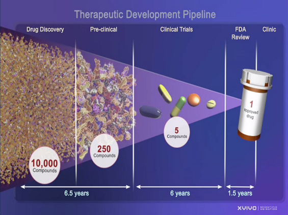
http://www.ncats.nih.gov/research/reengineering/process.html
The Rosetta molecular modeling suite
- Originally a protein structure prediction tool
- Expanded to protein design, protein-protein docking, protein-ligand docking
- An extensive collection of tools for manipulating and scoring large molecules
Rosetta protein design
A new Rosetta energy term improves design of native-like proteins
- Knowledge based potential generated by Durham et al. based on propensity of amino acid burial
- Rosetta energy function optimization:
- Minimize overall score
- Maintain overall amino acid profile
- New design performance metric based on PSSM score
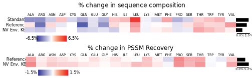
DeLuca, et al Biochemistry, 2011
Rosetta ligand docking
Ligand docking is inconsistently successful
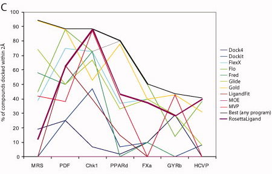
Davis et al. (2009). Protein Science. doi: 10.1002/pro.192
RosettaLigand: What we accomplished
- Improved sampling yields improved scientific performance
- Improved speed allows for larger screening studies
- Groundwork laid for future development of RosettaLigand
- RosettaLigand is a generic tool, useful across a wide range of protein targets
A brief history of RosettaLigand
- Originally developed in 2006 (Meiler and Baker)
- Extended to allow protein flexibility in 2008 (Davis and Baker)
- Redesigned for modularity and multiple ligand support in 2012 (Lemmon and Meiler)
RosettaLigand: Docking protocol
- Initial Placement
- Refinement
- Minimization
- One model: 50 seconds
- 1000 models for success
- 14 CPU hours per protein-ligand complex
- 583 CPU days for a 1000 compound screen
RosettaLigand: Initial placement grid energy function
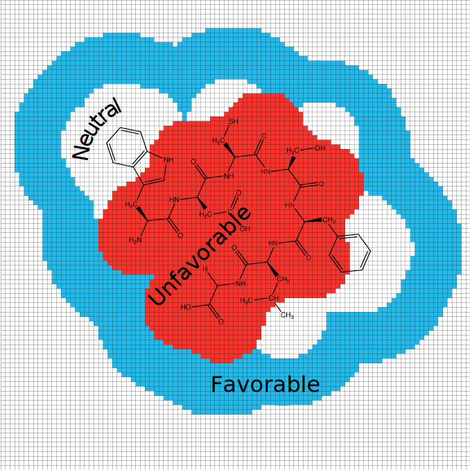
RosettaLigand: Initial placement sampling
Using the grid energy function
- Translate — Translate ligand to a non-clashing position
- Rotate — Collect diverse rotations, select random non-clashing rotation
- Slide Together — Slide ligand toward center of protein until contact is made
RosettaLigand: Refinement and minimization
Using Rosetta all-atom energy function
- Alternating rounds of side-chain optimization and small perturbations
- Minimization of entire complex
Improving RosettaLigand sampling
Original RosettaLigand initial placement 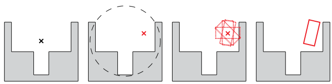
New RosettaLigand initial placement 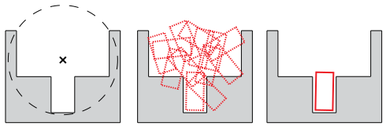
Improving RosettaLigand performance
- Profiled code to identify rate limiting steps
- Single slowest step was conversion of internal coordinates to Cartesian
- Rosetta performs rotations in internal coordinate space
- RosettaLigand initial placement grid is in Cartesian space
Internal coordinate space
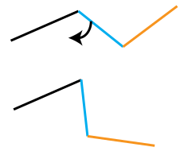
- Rosetta was optimized for large molecules
- Frequent internal coordinate changes, infrequent Cartesian lookup
- RosettaLigand initial placement: Cartesian lookup after every move
- We can perform ligand sampling entirely in Cartesian space
- We optimized the code to take advantage of modern CPU features
Comparing new and old sampling methods
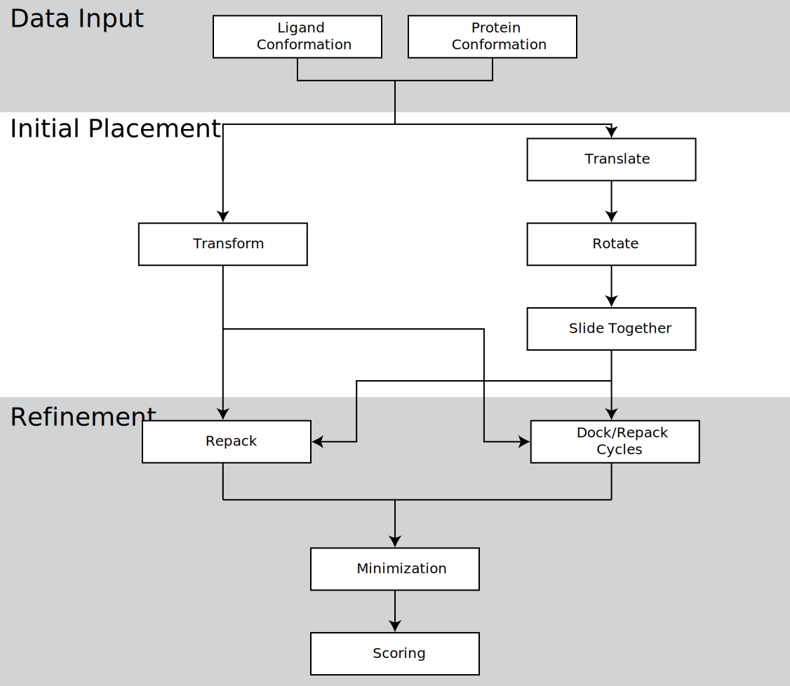New tools developed for screening large libraries
- Bulk parameterization
- Create ligand conformers
- Generate Rosetta parameter files
- Attach experimental data
- Screening JobInputter
- Automated cross-docking
- Large screens can be split into small chunks
- SQL data storage (with Matt O'Meara)
- Relational database storage of models
- Online filtering by score
- Tracking of protocols parameters
- Support of multiple SQL servers
- Preparation time reduced from a few days of work to an afternoon
Testing the new RosettaLigand
- 43-Protein subset of Community Structure Activity Resource (CSAR), excluding:
- co-factors
- metal ions
- structural waters
- Methods tested:
- Previously published RosettaLigand sampling method (Old)
- New RosettaLigand sampling method (New)
- Previously published RosettaLigand refinement method (Long)
- Minimization only refinement method (Short)
New sampling method improves sampling speed
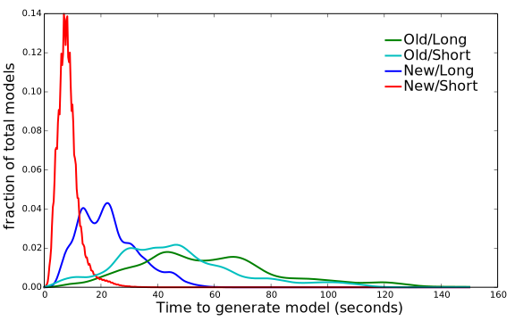
New sampling method improves probability of success
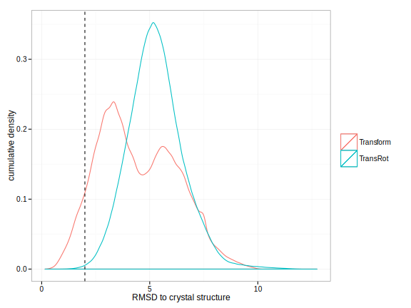
New sampling method improves docking success rate
Docking into crystal structures
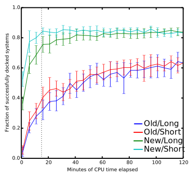
New sampling method improves docking success rate
Docking into crystal structures
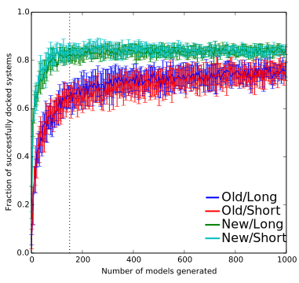
New sampling method improves docking success rate
Docking into repacked crystal structures
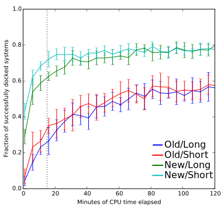
New sampling method improves docking success rate
Docking into relaxed crystal structures
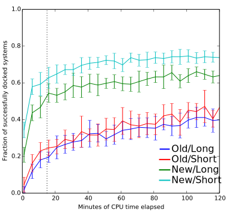
Q-Dock: A more challenging benchmark
- 154 Ligand-comparative model systems (1.4-24.0 Å RMSD)
- More noise, so intrinsically more challenging than CSAR
- http://cssb.biology.gatech.edu/skolnick/files/Q-Dock/index.html
New shape complementarity scoring grid
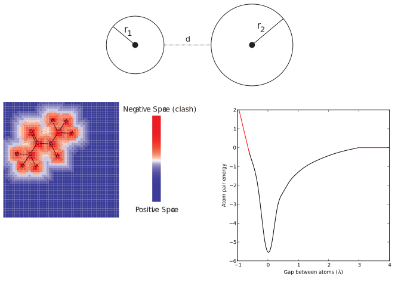
New hydrogen bonding scoring grid
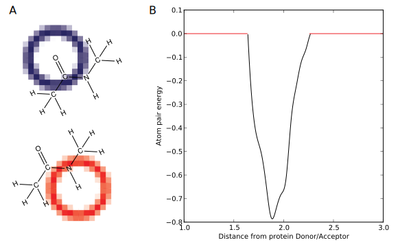
Grid Manager: A generic framework for managing scoring grids
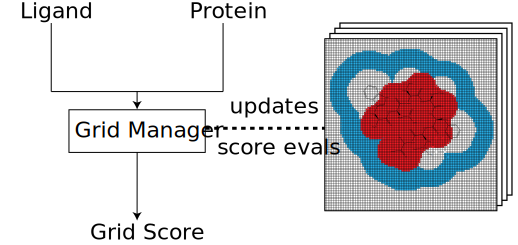
New potentials don't improve success rate
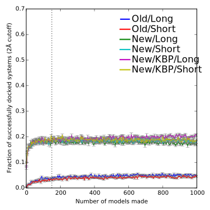
Minimal difference in performance between old and new scoring grids

Impact of improved sampling on docking symmetric ligands
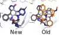
Impact of improved sampling on docking flexible ligands

Rough guidelines for RosettaLigand success
- Protein model accuracy: RMSD < 10.0 Å is required, RMSD < 5.0 Å is better
- Correct modeling of loops in binding site is critical
- Small ( < 100 atom) ligands are more likely to succeed
- Highly flexible ( > 20 rotatable bonds) ligands are more likely to fail
- Ligands with > 10 stereo-centers are more likely to fail
Hydrogen bonding grids as visualization tools in FoldIt
Future directions
- Investigate new sampling algorithms
- Improve quality of grid energy terms
- "Deep sampling" to map energy function
- Implement Gasteiger atom-typing and orbital based energy function
Summary
- Rosetta protein design
- New Rosetta energy term for protein design
- New quality metric for protein design
- Rosetta ligand docking
- Substantial improvements to RosettaLigand sampling
- 30-fold speed-up
- 15% increase in success rate over a range of proteins
- A new framework for scoring, with several new knowledge based scoring grids
- Laid groundwork for further exploration of RosettaLigand scoring and sampling methods
- Substantial improvements to RosettaLigand sampling